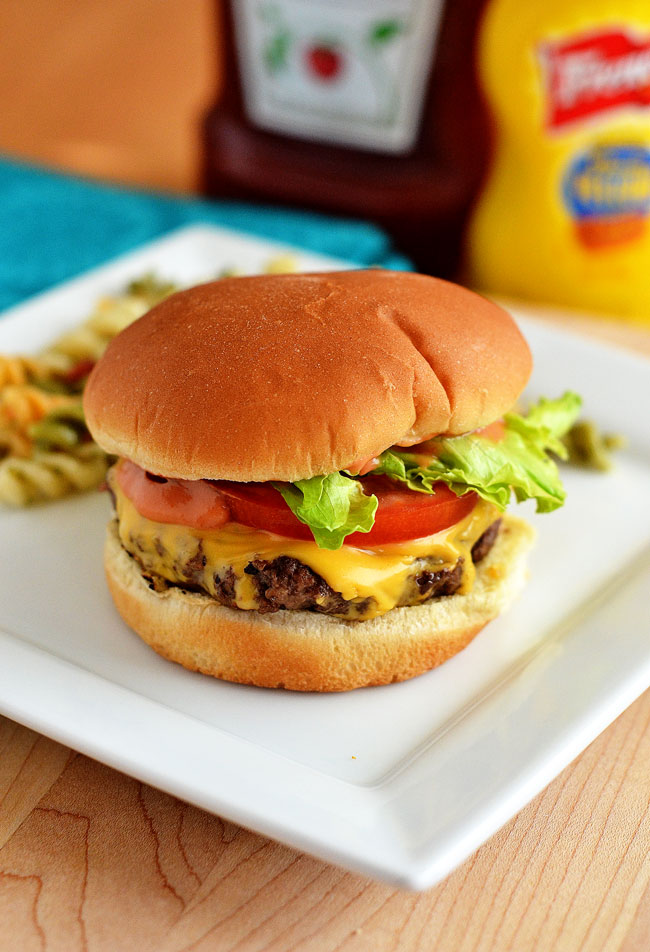

Cheeseburger

Juicy and flavorful cheeseburgers fresh off the grill!
These copycat In n’ Out Cheeseburgers taste just like the ones from the famous fast food chain!
INGREDIENTS
- 1 pound lean ground beef
- 1 egg white
- 1 small yellow onion grated (about 1/2 a cup)
- 1/2 teaspoon seasoning salt
- 1/2 teaspoon fresh ground pepper
- 1 Tablespoon Worcestershire sauce
- 6 slices american cheese
- 6 hamburger buns seedless
SECRET SAUCE
- 1/3 cup Mayo
- 2 tablespoons Ketchup
- 2 teaspoons Dill Pickle Relish
- 1 tsp Mustard
- 1/4 tsp Paprika
STEPS
- TO MAKE SECRET SAUCE: Mix all of the ‘secret sauce’ ingredients in a bowl. Refrigerate until ready to use.
- DIRECTIONS FOR BURGERS: In a large bowl, add ground beef, egg white, grated onion, worcestershire sauce, seasoning salt and pepper. Using your hands or a fork, gently mix together. Shape mixture into 6 thin patties. Place patties on grill or skillet and cook until no longer pink on the inside. About 3-5 minutes per side. Place one piece of american cheese over the burgers during the last minute of grilling.
- Spread the secret sauce on each inner bun. Place grilled patties on bottom bun and top with lettuce, tomato and onion. Enjoy!